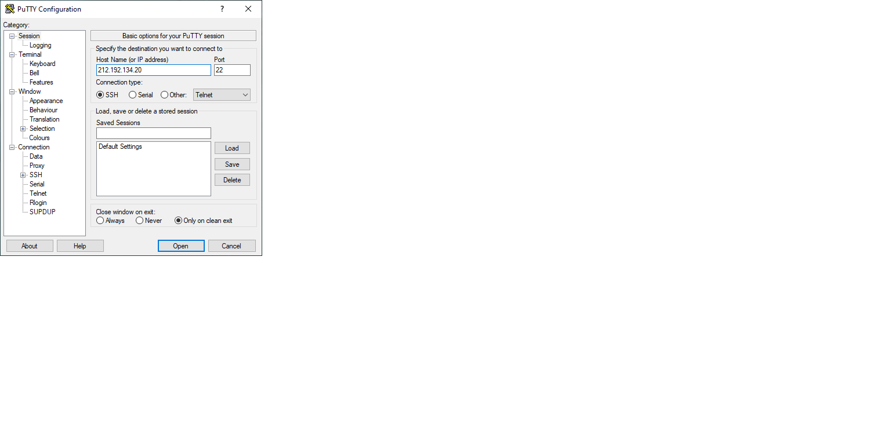
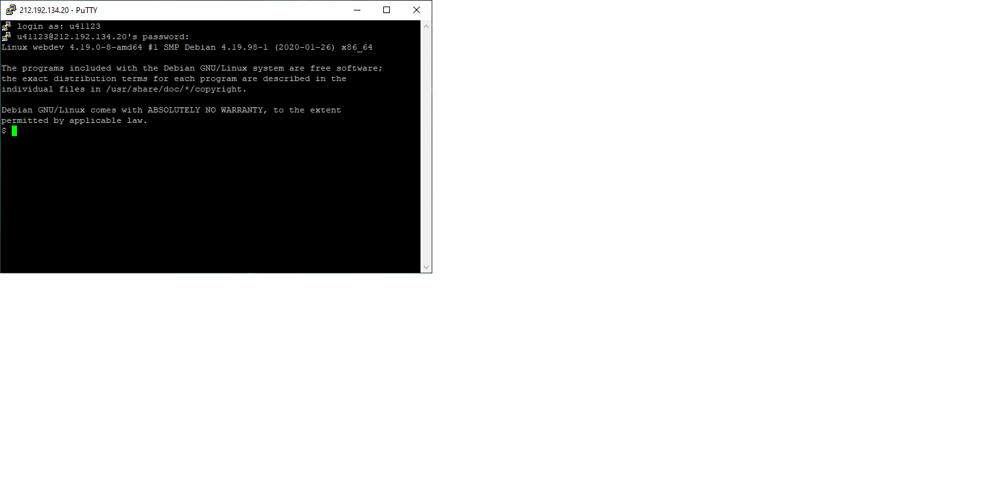
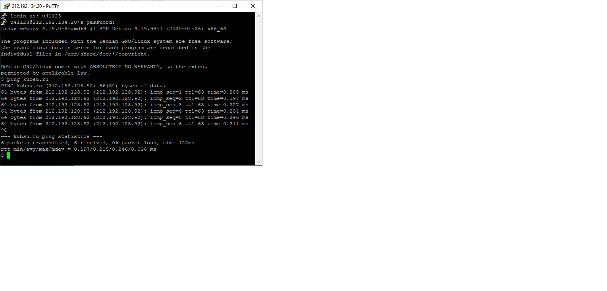
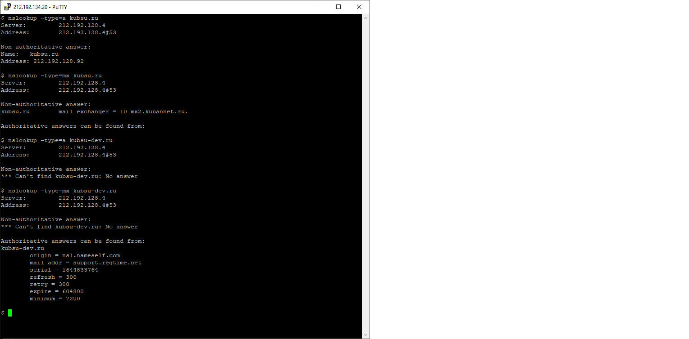
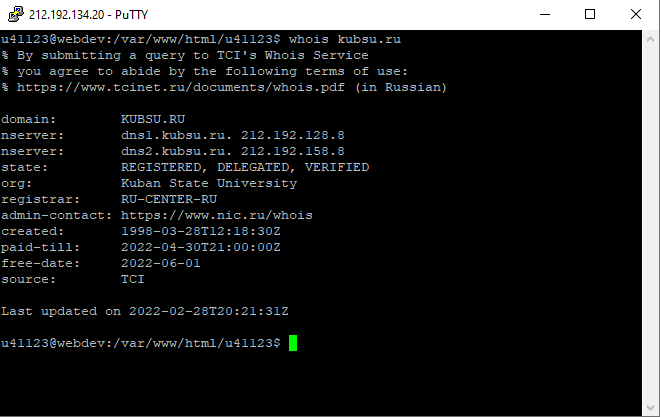
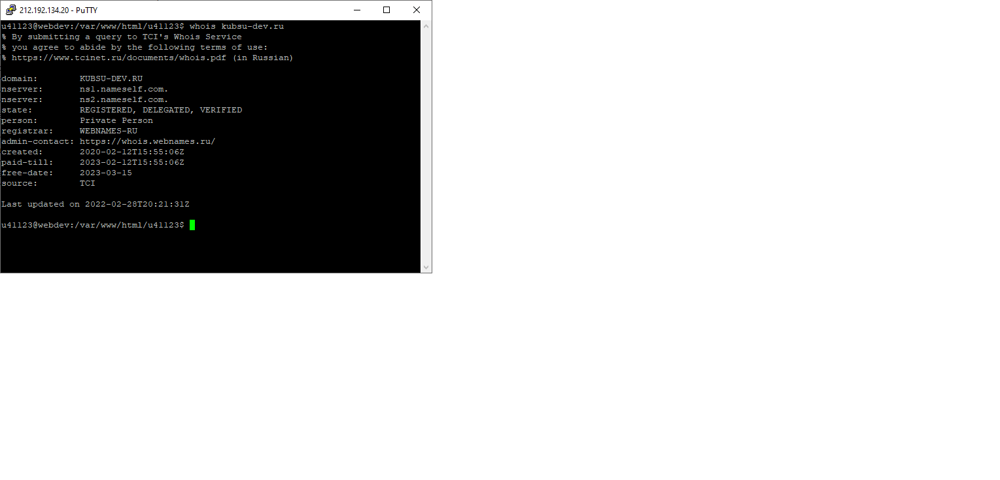
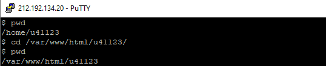
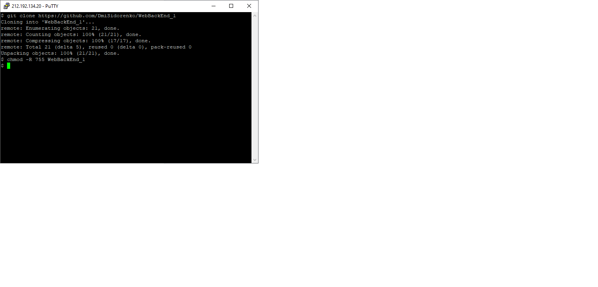

<!DOCTYPE html>
<html lang="ru">
  <head>
    <meta charset="utf-8" />
    <title>First task</title>
    <meta name="viewport" content="width=device-width, initial-scale=1">
  </head>

 <body>
    <p>1. PuTTY</p>
    
    <p>2. Авторизация</p>
    
    <p>3. Команда ping на kubsu.ru</p>
    
    <p>4. C помощью команды nslookup узнали A-записи и MX-записи домена kubsu.ru и
kubsu-dev.ru</p>
    
    <p>5. С помощью команды whois узнали дату регистрации домена kubsu.ru и kubsudev.ru</p>
    
    
    <p>6. Проверка текущей папки</p>
    
    <p>7. Копируем репозитарий в наш каталог и задаём права 755</p>
    
 <p></p>
 <p></p>
 <p></p>
